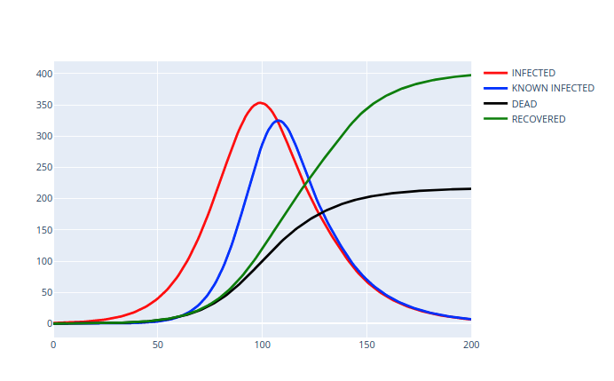
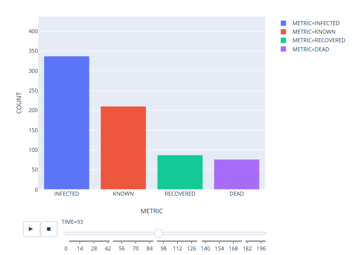

Outbreak simulation
This is an old disease outbreak simulation I wrote sometime around the beginning of the pandemic. The caveats to this model being (A) I had and have no background in epidemiology, (B) the code sucks. At the time I was in some OSINT-ish amateur-epidemiologist discord channels, and if I remember correctly I created this to quantitatively 'prove' that nothing ever happens. In retrospect, it's interesting how wrong I was...
{kind=link}
Forecast Pics#


Python Script#
import plotly.graph_objects as graph_objects
import plotly.express as px
import pandas as pd
class Simulation:
def __init__(
self,
starting_infected,
infected_growth_rate,
awareness,
awareness_growth_rate,
mortality_day_rate,
recovery_day_rate,
recovery_multiplier,
containment_effectiveness,
cycles,
):
self.infected = [starting_infected]
self.infected_growth_rate = infected_growth_rate
self.known = [0]
self.dead = [0]
self.recovered = [0]
self.awareness = awareness
self.awareness_growth_rate = awareness_growth_rate
self.mortality_day_rate = mortality_day_rate
self.recovery_day_rate = recovery_day_rate
self.recovery_multiplier = recovery_multiplier
self.containment_effectiveness = containment_effectiveness
self.cycles = cycles
def change(self):
new_recovered = self.infected[-1] * (
self.recovery_day_rate
+ (self.recovery_day_rate * self.awareness * self.recovery_multiplier)
)
new_dead = self.infected[-1] * self.mortality_day_rate
# containment effectiveness [0,1], 0: not effective, 1: totally effective
new_infected = (
self.infected[-1] - (self.known[-1] * self.containment_effectiveness)
) * self.infected_growth_rate
new_infected = new_infected - new_dead - new_recovered
self.dead.append(self.dead[-1] + new_dead)
self.recovered.append(self.recovered[-1] + new_recovered)
self.infected.append(self.infected[-1] + new_infected)
def discovery(self):
not_discovered = self.infected[-1] - self.known[-1]
found = self.awareness * not_discovered
self.known.append(self.known[-1] + found)
def awareness_growth(self):
if self.awareness + (self.awareness * self.awareness_growth_rate) > 1:
self.awareness = 1
else:
self.awareness = self.awareness + (
self.awareness * (self.awareness_growth_rate)
)
def update(self):
self.discovery()
self.awareness_growth()
self.change()
def go(self):
for i in range(self.cycles):
self.update()
return True
def export(self):
return pd.DataFrame(
{
"INFECTED": self.infected,
"KNOWN": self.known,
"RECOVERED": self.recovered,
"DEAD": self.dead,
}
).astype(int)
def plot(self):
fig = graph_objects.Figure()
data = [self.infected, self.known, self.dead, self.recovered]
labels = ["INFECTED", "KNOWN INFECTED", "DEAD", "RECOVERED"]
colors = ["red", "blue", "black", "green"]
for i in range(4):
fig.add_trace(
graph_objects.Scatter(
x=list(range(len(data[i]))),
y=data[i],
mode="lines",
name=labels[i],
line=dict(color=colors[i], width=3),
)
)
fig.show()
def bar(self):
df = self.export().copy(deep=True)
infected = df["INFECTED"]
known = df["KNOWN"]
recovered = df["RECOVERED"]
dead = df["DEAD"]
infected = infected.reset_index()
infected["metric"] = "INFECTED"
infected.columns = ["TIME", "COUNT", "METRIC"]
known = known.reset_index()
known["metric"] = "KNOWN"
known.columns = ["TIME", "COUNT", "METRIC"]
recovered = recovered.reset_index()
recovered["metric"] = "RECOVERED"
recovered.columns = ["TIME", "COUNT", "METRIC"]
dead = dead.reset_index()
dead["metric"] = "DEAD"
dead.columns = ["TIME", "COUNT", "METRIC"]
df = infected.append(known).append(recovered).append(dead) # type: ignore
df.reset_index(inplace=True, drop=True)
fig = px.bar(
df,
x="METRIC",
y="COUNT",
color="METRIC",
animation_frame="TIME",
range_y=[0, df["COUNT"].max() + round(df["COUNT"].max() * 0.1)],
)
fig.layout.updatemenus[0].buttons[0].args[1]["frame"]["duration"] = 10 # type: ignore
fig.show()
Original Docs#
OBsim: Outbreak simulation program
Dependencies
- numpy
- plotly
- pandas
- python 3.7
Parameters
starting_infected
- descr: number of individuals infected on day 1 of outbreak, suggested input is 1
- range: [ 0, inf ]
infected_growth_rate
- descr: daily percentage growth rate of infection, realistic inputs range from 0.01 to 0.1
- range: [ 0, inf ]
awareness
- descr: starting awareness of virus, ranges from 0 to 1, increases based on multiplier so a 0 value will never increase
- range: [ 0, 1 ]
max_awareness
- descr: maximum internal awareness value - can not grow past this point
- range: [ 0, 1 ]
awareness_growth_rate
- descr: Daily percentage growth rate of awareness value
- range: [ 0, inf ]
mortality_day_rate
- descr: Daily percentage of infected that die
- range: [ 0, 1 ]
recovery_day_rate
- descr: daily percentage of infected that recover
- range: [ 0, 1 ]
recovery_multiplier
- descr: if people are known to be infected, they may recover faster, this represents a multiplier for the speed they recover if they are known to be infected
- range: [ 0, inf ]
containment_effectiveness
- descr: what percentage of known infected patients are prevented from infecting others, if 0, containment is 0 percent effective, if 0.95, containment is 95% effective
- range: [ 0, 1 ]
cycles
- descr: equivalent to number of days the simulation runs for
- range: [ 0, inf]